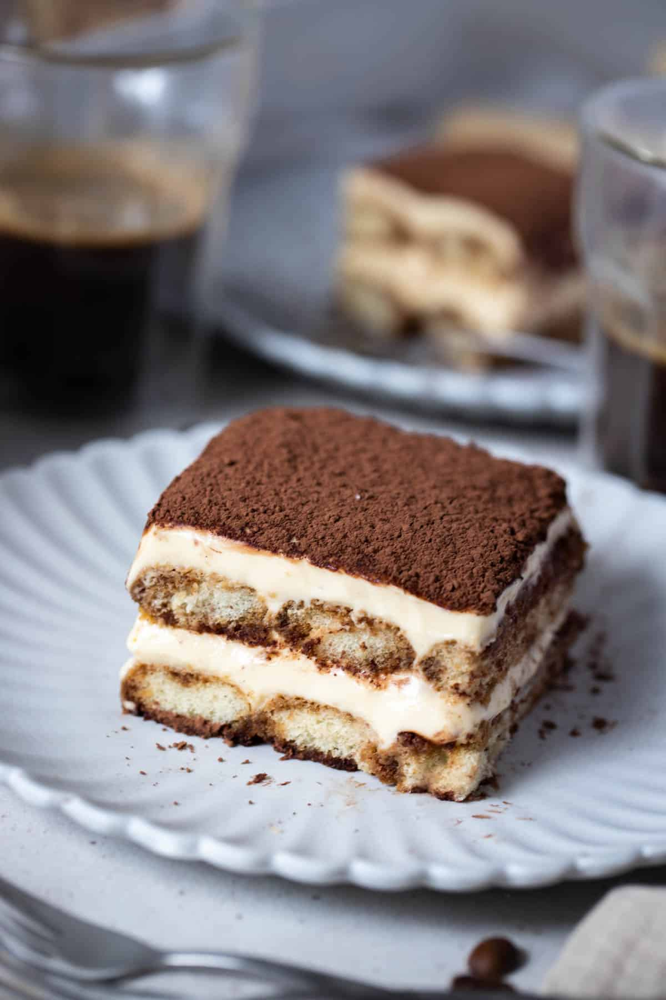

Tiramisu

Literally meaning “pick me up” in Italian, this heavenly tiramisu will do just that! Every scrumptious bite has elements of a lightly sweetened and wonderfully rich mascarpone filling dotted with coffee-flavoured ladyfinger sponge and a hint of coffee liquor.